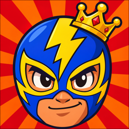

Rey del Ring
Aim, launch and climb to the top of the ring.
Help
Play as El Relámpago, a luchador climbing toward the championship. Drag anywhere on the screen to aim, then let go to launch. Land on the platforms above you and reach the top of each mission. There are 60 missions in 6 chapters, and each chapter ends with a boss.
What happens when I fall?
A fall costs one chance and you go back to the last checkpoint. If you lose your last chance, you can watch an optional ad to get one more chance from the checkpoint, once per attempt. Or say no and try the mission again. Your map progress is always kept.
How do I earn crowns and coins?
Each mission gives up to 3 crowns for its objectives. Perfect landings in the middle of a platform give extra coins. Spend coins on masks in the SHOP. Bosses unlock special masks.
What is the Champion Pass?
A one-time purchase: no ads between missions, every mission open and the Champion Mask. To restore it on a new device: Settings › Restore purchases.
How do I change the language?
The game is in 44 languages and follows your iPhone's language. To change it for this game only: iOS Settings › Apps › Rey del Ring › Language.
Contact
Write to alfreditogames2025@gmail.com.
Privacy policy
Last updated: November 10, 2026
We don't collect personal data that identifies you. There are no accounts and no sign-in. Your progress, coins and settings are stored only on your device; deleting the app deletes them. The game does not use the microphone, camera, photos or contacts.
Ads (Google AdMob)
The game is free and shows ads from Google AdMob in two places. An occasional ad may appear when you leave the screen of a won mission. You can also choose to watch an ad for an extra chance. To show and measure ads, Google may collect:
- your device's advertising identifier, only if you allow tracking in Apple's prompt
- your IP address and approximate location
- how you interact with ads
- crash and performance data
Where the law requires it (for example the EEA, the UK and some US states), Google's consent message asks for your choices first. You can change them at any time in Settings › Privacy options. You can also turn tracking off in iOS Settings › Privacy & Security › Tracking. Google's policy: policies.google.com/technologies/ads.
Gameplay statistics and crash reports (Google Firebase)
To improve the game we use Google Firebase (Analytics, Remote Config and Crashlytics). It receives gameplay usage data (for example missions played, falls, crowns, masks bought and ads watched), technical and crash data, and an app installation identifier. It never includes your name or anything about you, is not linked to your identity and is not used for advertising or tracking. Where the law requires it, statistics only turn on if you accept the consent message. Google's policy: policies.google.com/privacy.
Purchases
The Champion Pass is bought through Apple. Apple processes the payment, and we never receive your payment details.
Game Center
Game Center is optional. If you sign in, Apple handles your achievements and leaderboard scores under Apple's privacy policy, and we never see your account.
Ads are only suitable for all audiences (rated G). Questions: alfreditogames2025@gmail.com.
Español
Ayuda
Eres El Relámpago, un luchador que sube hacia el campeonato. Arrastra en cualquier parte de la pantalla para apuntar y suelta para lanzarte. Cae en las plataformas de arriba y llega a la cima de cada misión. Hay 60 misiones en 6 capítulos, y cada capítulo termina con un jefe.
Cada caída cuesta una oportunidad y vuelves al último punto de control. Si pierdes la última, puedes ver un anuncio opcional para volver con una oportunidad más, una vez por intento. Cada misión da hasta 3 coronas, y los aterrizajes perfectos dan monedas para comprar máscaras en la TIENDA.
Política de privacidad
No recopilamos datos personales que te identifiquen. No hay cuentas. Tu progreso se guarda solo en tu dispositivo y se borra si borras la app. El juego no usa el micrófono, la cámara, las fotos ni los contactos.
Anuncios (Google AdMob). El juego es gratis. Puede mostrar un anuncio de vez en cuando al salir de una misión ganada, y otro opcional si decides verlo para ganar una oportunidad extra. Para mostrar y medir los anuncios, Google puede recopilar:
- el identificador de publicidad del dispositivo, solo si permites el rastreo en el aviso de Apple
- tu dirección IP y tu ubicación aproximada
- cómo interactúas con los anuncios
- datos de fallos y de rendimiento
Donde la ley lo exige, el mensaje de consentimiento de Google te pregunta primero. Puedes cambiar tus opciones en Ajustes › Opciones de privacidad. Política de Google: policies.google.com/technologies/ads.
Estadísticas y errores (Google Firebase). Para mejorar el juego usamos Google Firebase (Analytics, Remote Config y Crashlytics): datos de uso del juego (misiones jugadas, caídas, coronas, máscaras compradas, anuncios vistos), datos técnicos y de errores y un identificador de instalación. No incluyen tu nombre, no se vinculan a tu identidad y no se usan para publicidad ni para rastrearte. Donde la ley lo exige, las estadísticas solo se activan si aceptas el aviso de consentimiento.
Compras. El Pase del Campeón se compra a través de Apple, y nosotros nunca recibimos tus datos de pago.
Game Center. Es opcional. Si inicias sesión, Apple maneja tus logros y puntuaciones, y nosotros no vemos tu cuenta.
Contacto: alfreditogames2025@gmail.com.
Português
Ajuda
Você é El Relámpago, um lutador subindo rumo ao campeonato. Arraste em qualquer lugar da tela para mirar e solte para se lançar. Pouse nas plataformas acima e chegue ao topo de cada missão. São 60 missões em 6 capítulos, e cada capítulo termina com um chefe.
Cada queda custa uma chance e você volta ao último ponto de controle. Se perder a última, pode assistir a um anúncio opcional para voltar com mais uma chance, uma vez por tentativa. Cada missão dá até 3 coroas, e pousos perfeitos dão moedas para comprar máscaras na LOJA.
Política de privacidade
Não coletamos dados pessoais que identifiquem você. Não há contas. O progresso fica só no seu aparelho e é apagado se você apagar o app. O jogo não usa o microfone, a câmera, as fotos nem os contatos.
Anúncios (Google AdMob). O jogo é grátis. Ele pode mostrar um anúncio de vez em quando ao sair de uma missão vencida, e outro opcional se você escolher assistir para ganhar uma chance extra. Para exibir e medir os anúncios, o Google pode coletar:
- o identificador de publicidade do aparelho, só se você permitir o rastreamento no aviso da Apple
- seu endereço IP e sua localização aproximada
- como você interage com os anúncios
- dados de falhas e de desempenho
Onde a lei exige, a mensagem de consentimento do Google pergunta antes. Você pode mudar suas escolhas em Ajustes › Opções de privacidade. Política do Google: policies.google.com/technologies/ads.
Estatísticas e erros (Google Firebase). Para melhorar o jogo usamos o Google Firebase (Analytics, Remote Config e Crashlytics): dados de uso do jogo, dados técnicos e de erros e um identificador de instalação. Não incluem seu nome, não são vinculados à sua identidade e não são usados para publicidade nem rastreamento. Onde a lei exige, as estatísticas só são ativadas se você aceitar o aviso de consentimento.
Compras. O Passe do Campeão é comprado pela Apple, e nunca recebemos seus dados de pagamento.
Game Center. É opcional. Se você entrar, a Apple cuida das suas conquistas e pontuações, e nós não vemos sua conta.
Contato: alfreditogames2025@gmail.com.
Confidentialité · Datenschutz · Privacy · プライバシー · 개인정보
Français. Nous ne collectons aucune donnée qui vous identifie et il n'y a pas de compte ; la progression reste sur votre appareil. Le jeu affiche des publicités Google AdMob : parfois en quittant une mission gagnée, ou au choix pour obtenir une chance de plus. Google peut collecter l'identifiant publicitaire (seulement si vous autorisez le suivi), l'adresse IP, la position approximative, les interactions avec les publicités et des données de diagnostic. Vos choix : Réglages › Options de confidentialité. Le Pass du champion est acheté via Apple, qui traite le paiement. Pour améliorer le jeu, Google Firebase reçoit des statistiques de jeu, des rapports de plantage et un identifiant d'installation, jamais utilisés pour la publicité ni le suivi. Game Center est facultatif.
Deutsch. Wir erheben keine Daten, die dich identifizieren, es gibt kein Konto; der Spielstand bleibt auf deinem Gerät. Das Spiel zeigt Werbung von Google AdMob: manchmal beim Verlassen einer gewonnenen Mission oder freiwillig für eine zusätzliche Chance. Google kann die Werbe-ID (nur wenn du Tracking erlaubst), IP-Adresse, ungefähren Standort, Interaktionen mit Werbung und Diagnosedaten erheben. Deine Auswahl: Optionen › Datenschutzoptionen. Der Champion-Pass wird über Apple gekauft; Apple wickelt die Zahlung ab. Zur Verbesserung des Spiels erhält Google Firebase Spielstatistiken, Absturzberichte und eine Installations-ID, nie für Werbung oder Tracking. Game Center ist freiwillig.
Italiano. Non raccogliamo dati che ti identificano e non c'è un account; i progressi restano sul tuo dispositivo. Il gioco mostra annunci di Google AdMob: a volte quando esci da una missione vinta, o a scelta per avere una possibilità in più. Google può raccogliere l'identificativo pubblicitario (solo se consenti il tracciamento), l'indirizzo IP, la posizione approssimativa, le interazioni con gli annunci e dati diagnostici. Le tue scelte: Opzioni › Opzioni privacy. Il Pass del campione si acquista tramite Apple, che gestisce il pagamento. Per migliorare il gioco, Google Firebase riceve statistiche di gioco, rapporti sugli arresti anomali e un ID di installazione, mai usati per pubblicità o tracciamento. Game Center è facoltativo.
日本語。当方は個人情報を収集せず、アカウントもありません。進行状況は端末にのみ保存されます。本ゲームは Google AdMob の広告を表示します（勝利したミッションを出るときにまれに表示、またはチャンスを1回増やすために任意で視聴）。Google は広告ID（トラッキングを許可した場合のみ）、IPアドレス、おおよその位置情報、広告の操作、診断データを収集することがあります。設定：設定 › プライバシー設定。チャンピオンパスは Apple を通じて購入され、支払いは Apple が処理します。ゲーム改善のため、Google Firebase がプレイ統計、クラッシュレポート、インストールIDを受け取りますが、広告やトラッキングには使用しません。Game Center は任意です。
한국어. 저희는 개인 정보를 수집하지 않으며 계정도 없어요. 진행 상황은 기기에만 저장돼요. 이 게임은 Google AdMob 광고를 보여 줘요(이긴 미션을 나갈 때 가끔, 또는 기회를 한 번 더 얻으려고 직접 선택한 광고). Google은 광고 식별자(추적을 허용한 경우에만), IP 주소, 대략적인 위치, 광고 상호작용, 진단 데이터를 수집할 수 있어요. 설정: 설정 › 개인정보 옵션. 챔피언 패스는 Apple을 통해 구매하며 결제는 Apple이 처리해요. 게임 개선을 위해 Google Firebase가 플레이 통계, 오류 보고서, 설치 ID를 받지만 광고나 추적에는 절대 쓰지 않아요. Game Center는 선택 사항이에요.
Contact: alfreditogames2025@gmail.com